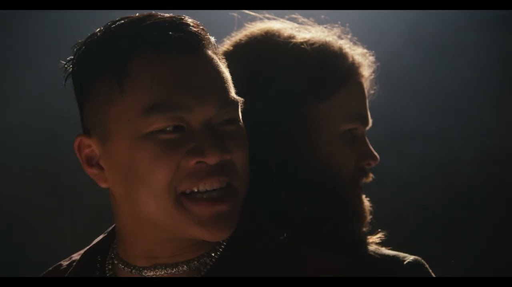

DiscomRobulated

Project Details
My newest short film projekt fra 2025 where I worked som 2nd Assistant Camera og GFX & Titles. This project repræsenterer min seneste arbejde og viser min fortsatte udvikling inden for filmproduktion.
My Role
- 2nd Assistant Camera: Teknisk support til kamerateamet, fokus pulling og udstyr
- GFX & Titles: Grafik design og titelsekvenser i post-produktion
Teknisk specialisering
På DiscomRobulated fik jeg mulighed for at arbejde tæt med kamerateamet og samtidigt bidrage kreativt til filmens grafiske elementer. Dette kombinerer min tekniske ekspertise med kreative færdigheder.
Grafisk arbejde
Som ansvarlig for GFX & Titles skabte jeg visuelle elementer der understøtter filmens narrative og æstetiske vision. Dette arbejde kræver både teknisk kunnen og kunstnerisk følsomhed.